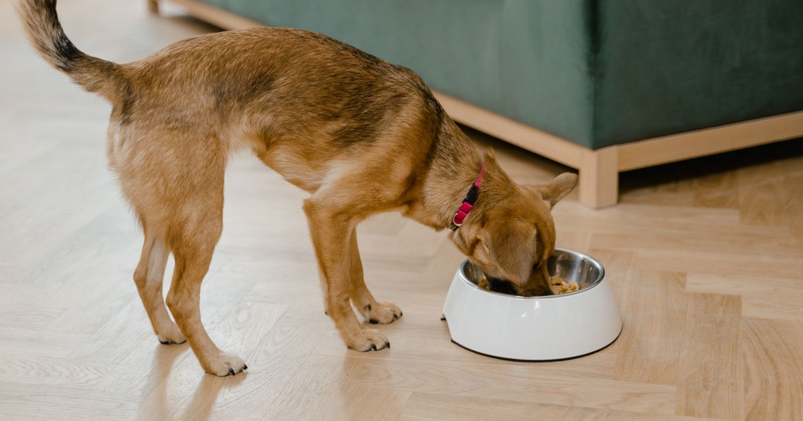

Entre os comedouros automáticos para cachorro mais vendidos no Mercado Livre em 2026 estão modelos de timer simples de entrada (a partir de ~R$ 28), modelos intermediários com capacidade de 4L e gravação de voz (como o Newpet 4L), e modelos com Wi-Fi e app completo (como o VDRBG 4L Wi-Fi). A escolha certa depende do porte do cão, da rotina do tutor e de quanto controle remoto você realmente precisa.
Veja o comparativo por categoria de preço e recurso.
Key Takeaways
- Modelos de entrada (timer simples, sem app) partem de ~R$ 28 no Mercado Livre e atendem bem quem só precisa de horários fixos (Mercado Livre, retrieved 2026-08-20).
- O Newpet 4L é um dos modelos mais vendidos por combinar capacidade grande, gravação de voz e preço acessível — mas não tem Wi-Fi.
- O VDRBG 4L Wi-Fi está entre os modelos líderes em satisfação com app: uma pesquisa com mais de 750 avaliações verificadas de marketplace apontou mais de 94% de avaliações 5 estrelas para VDRBG e Animus juntos (Farmapets, retrieved 2026-08-20).
- Para cães de porte grande, priorize capacidade de 4L ou mais para reduzir reabastecimento.
guia completo de comedouro automático para pet
Ideal para quem quer resolver o problema de horário sem gastar muito e sem depender de Wi-Fi em casa. Marcas como Truqys Pets, Ideal Dog e Ecobio aparecem entre as mais vendidas nessa faixa, com preços a partir de aproximadamente R$ 28 (Mercado Livre — Comedouro Automático, retrieved 2026-08-20). O VDRBG 4L Wi-Fi, comparado à frente, também aparece entre os modelos com boa aceitação e garantia padrão de 12 meses no Brasil (Rei das Promoções, retrieved 2026-08-20).
Para quem é indicado: cães de porte pequeno a médio, tutores que só precisam de 1-4 refeições programadas por dia sem monitoramento remoto.
O Newpet 4L é um dos modelos com destaque de "Mais Vendido" na categoria no Mercado Livre (Mercado Livre, retrieved 2026-08-20). Combina capacidade de 4 litros, gravação de voz de até 12 segundos para chamar o pet e funcionamento via tomada ou pilhas — mas não conta com Wi-Fi ou app.
review completo do comedouro Newpet 4L
Para quem quer controle remoto total, o VDRBG 4L Wi-Fi é apontado como um dos modelos mais completos e confiáveis do segmento, com porções ajustáveis de 1 a 40 por refeição e configuração via app Tuya. Uma pesquisa com mais de 750 avaliações verificadas de marketplace colocou o VDRBG entre os modelos líderes em satisfação, com mais de 94% de avaliações 5 estrelas — junto com o modelo Animus (Farmapets, retrieved 2026-08-20).
review completo do comedouro VDRBG 4L Wi-Fi
| Critério | Timer Simples | Newpet 4L | VDRBG 4L Wi-Fi |
|---|---|---|---|
| Preço aproximado | A partir de R$ 28 | Faixa intermediária | Faixa mais alta |
| Wi-Fi/App | Não | Não | Sim |
| Capacidade | Geralmente menor | 4L | 4L |
| Gravação de voz | Raro | Sim (12s) | Sim (12s) |
| Ideal para | Rotina fixa, orçamento apertado | Cão médio/grande, sem depender de app | Quem viaja/trabalha fora e quer controle remoto |
vale a pena um comedouro automático — prós, contras e preço
Se você tem cão e gato em casa, vale entender antes qual a diferença entre comedouro automático para gato e para cachorro antes de decidir o modelo.
Cães maiores comem mais rápido e em maior volume, o que expõe defeitos de calibração com mais facilidade do que em gatos ou cães pequenos. Ao cruzar os relatos de compradores dos três modelos comparados aqui, o padrão observado é consistente: reclamações de "porção errada" aparecem quase sempre em relatos de tutores de cães grandes, não de gatos — provavelmente porque o erro percentual da calibração se torna mais perceptível em porções maiores. Na prática, isso significa que vale testar a calibração do comedouro nos primeiros dias, independentemente do modelo escolhido, especialmente se o pet for de porte grande.
Não existe um único "melhor" comedouro automático para cachorro — existe o melhor para a sua rotina. Se o orçamento é a prioridade, comece pelo timer simples. Se você quer capacidade e gravação de voz sem pagar por Wi-Fi, o Newpet 4L é uma escolha recorrente entre os mais vendidos. Se o controle remoto é essencial, o VDRBG 4L Wi-Fi é o mais bem avaliado da faixa com app.
melhor alimentador automático para gatos
Escrito pela Equipe Smart Pet Gadgets. Veja como comparamos preços e avaliações na nossa política editorial.
🐾 Confira o preço e a disponibilidade atual no Mercado Livre.
Ver no Mercado Livre →Link de afiliado: podemos receber uma comissão por compras feitas através deste link, sem custo adicional para você.
Nildo Alves — curadoria de produtos pet no Smart Pet Gadgets. Testa e pesquisa produtos para cães e gatos, cruzando especificações de fabricante com boas práticas veterinárias e dados de mercado.
Sobre o Smart Pet Gadgets · Contato · Política editorial e de afiliados